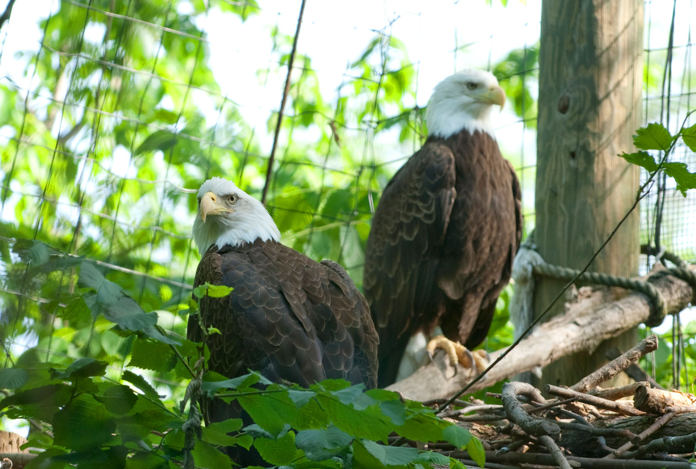
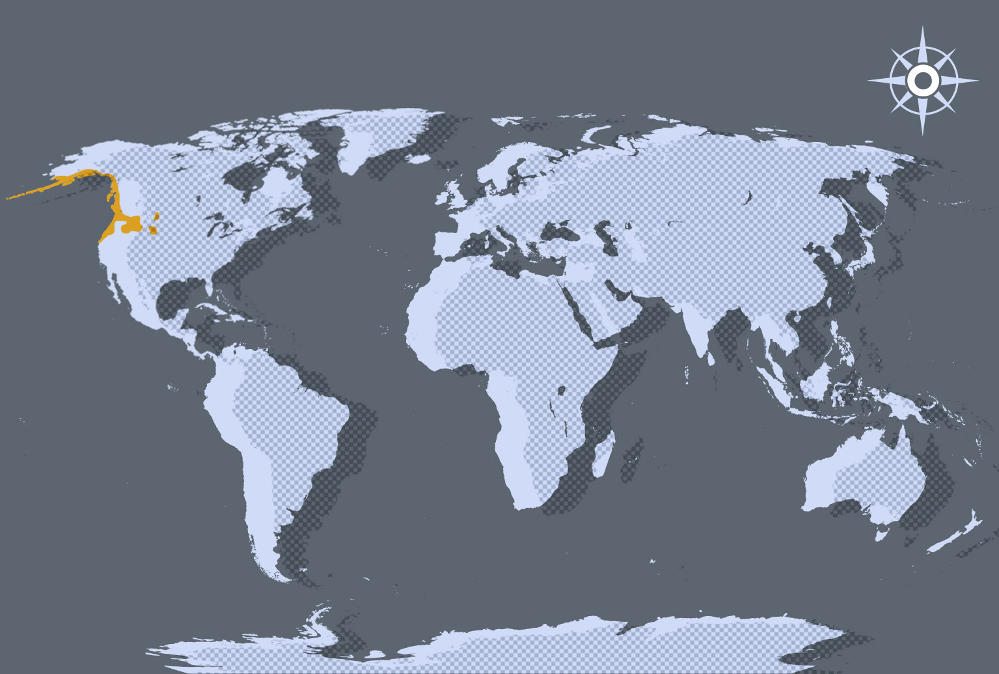

Dit is de Afrikaanse grijze papagaai,
Lions earned the title "King of the Beasts" perhaps because few, if any, sounds in the animal kingdom are as frightening as the lion's roar. Or, perhaps it is because the long heavy mane simply looks regal. They are the second largest of the big cats. The lion reaches maturity (full growth) at about age 5 to 6. Females are somewhat smaller than the males. They have the largest brain of the big cats. Lions often sleep 20 or more hours per day.